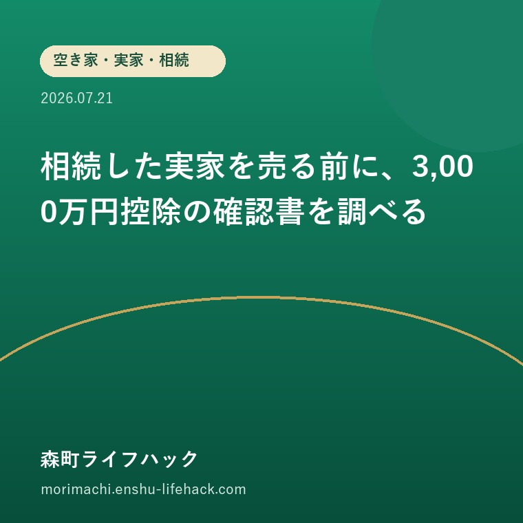

空き家・実家・相続
相続した実家を売る前に、3,000万円控除の確認書を調べる

この記事の要点
Q. 実家を売った後で、空き家の税の特例を申請すればよいですか？
A. 契約や解体の前に要件と必要書類を確認すべきです。森町内の家屋に関する確認書は町の資産税係が発行します。
被相続人が住んでいた家を売る場合、要件を満たせば譲渡所得の特例対象になる可能性があります。契約前に確認したい役場書類を整理します。
まず、公式資料から事実を整理する
森町公式は、被相続人居住用家屋等確認書の発行手続きを案内しています。この確認書だけで特例適用が決まるものではなく、家屋、相続、売却時期、耐震や解体など複数の要件があります。

評価——良い点と、注文したい点
良い点
- 町内家屋の確認書窓口と提出書類が公式に示されている
- 売却前に特例の可能性を検討する入口がある
注文したい点
- 確認書を取れば必ず控除されると考えない
- 解体・改修・売買契約の順番を要件確認前に決めない

大石の視点
最後に一言。実家売却は価格だけでなく、いつ何をするかで税の扱いが変わる場合があります。売却査定と税の確認を同時に始め、税理士や税務署への確認を後回しにしないことが大切です。
確認する順番
- 1. 相続日・居住状況・家屋の状態を整理する
- 2. 町の確認書と国税の適用要件を照合する
- 3. 契約・解体前に税務の専門家へ確認する
まとめ
- 契約や解体の前に要件と必要書類を確認すべきです。森町内の家屋に関する確認書は町の資産税係が発行します。
- 町内家屋の確認書窓口と提出書類が公式に示されている
- 確認書を取れば必ず控除されると考えない
参考にした公式情報
- 被相続人居住用家屋等確認書の発行について／静岡県森町（2026年8月5日確認）
最終確認日：2026-08-05 ／ 本記事は公表情報と執筆者の見解を分けて記載しています。制度・開催・公開状況は変更される場合があるため、最新情報は公式ページでご確認ください。